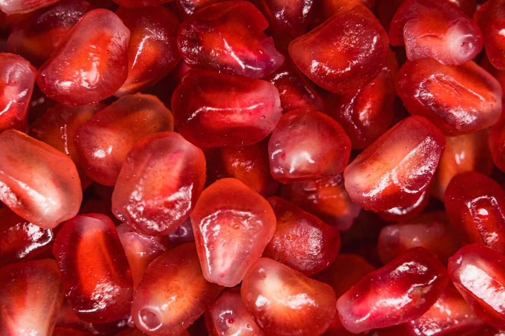

How I Finally Made Pomegranate Compound Improves Heart Function By Up To 80% In Study Work For Me

Key takeaways
- I used to stare at the cardiovascular health aisle in my local pharmacy feeling completely defeated and confused.
- My family history had me anxious, and every medical journal felt like it was written in a foreign language until I stumbled on how a Pomegranate C
- Focus on: The Science Behind the Seed.
I used to stare at the cardiovascular health aisle in my local pharmacy feeling completely defeated and confused. My family history had me anxious, and every medical journal felt like it was written in a foreign language until I stumbled on how a Pomegranate Compound Improves Heart Function By Up To 80% In Study reports.
That stat stopped me dead in my tracks during my morning coffee routine. An 80% boost in cardiac efficiency felt too good to be true, so I dug into the clinical trials behind punicalagins and urolithin A.
The Science Behind the Seed
What the research actually showed was mind-blowing regarding endothelial function and arterial flexibility. When cellular energy output in cardiac tissue improves, your whole vascular system breathes a sigh of relief.
I started integrating specific tart cherry juices and fresh pomegranate arils into my routine after reading about a related healthy tip on vascular inflammation. It wasn't about drinking gallons of sugary juice, but targeting the potent polyphenols.
How I Made It Work Daily
Finding high-quality whole fruit at my local US grocery store became my weekly obsession. I paired my daily polyphenol intake with a another practical guide on managing daily stress triggers.
The key was consistency over perfection every single morning. I noticed less fatigue during my daily neighborhood walks within just a few weeks of this subtle shift.
It turns out that Pomegranate Compound Improves Heart Function By Up To 80% In Study parameters by directly combatting oxidative stress in human blood vessels. That biological mechanism gave me the confidence to stick with my fresh daily ritual.
The 2-Minute Win
Toss two tablespoons of fresh pomegranate arils into your morning plain Greek yogurt or oatmeal for an instant polyphenol punch without added sugars.
Beyond the Basic Juice
If you hate peeling pomegranates, you are definitely not alone in that frustration. I used to stain every white shirt I owned trying to deseed them until I mastered the bowl-of-water trick.
I also learned to pair these rich antioxidants with healthy fats, like a handful of raw walnuts. You can check out this similar wellness insight on nutrient absorption to see why fat soluble co-factors matter so much.
Real health shifts do not happen overnight from a magic pill; they build up through tiny, science-backed choices you actually enjoy making.
Keeping my arteries happy became a lot easier once I stopped overcomplicating things. I followed a stay consistent with this protocol for daily movement to complement my diet.
When you realize a Pomegranate Compound Improves Heart Function By Up To 80% In Study environments, prioritizing your daily polyphenols becomes an easy decision. Feel free to explore more longevity guides to build your own sustainable heart-healthy lifestyle.
Educational only — not medical advice.
Recommended Reading
- The Ultimate Guide to Daily Hydration: Boost Energy & Wellness
- How to Actually Boost Energy by Balancing Blood Sugar
- This Lifestyle Program Improved Cognition 55% More Than Basic Health Advice
More in longevity
Scientists Restore A Brain Protein And Reverse Signs Of Aging In Mice: Real Takeaways
Scientists restore a brain protein and reverse signs of aging in mice. Here is what this longevity breakthrough means fo
Read article →Scientists Find Ozempic May Slow Aging Itself (Here is What I Did)
Scientists Find Ozempic May Slow Aging Itself beyond weight loss. Discover practical, everyday longevity tips you can st
Read article →